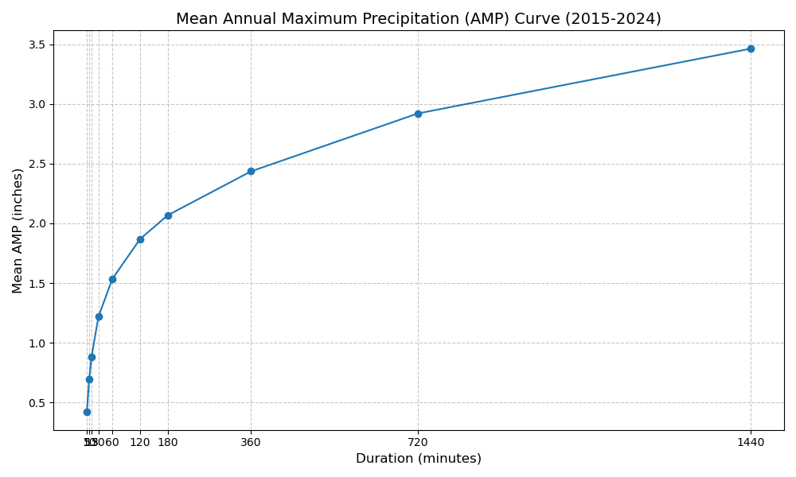
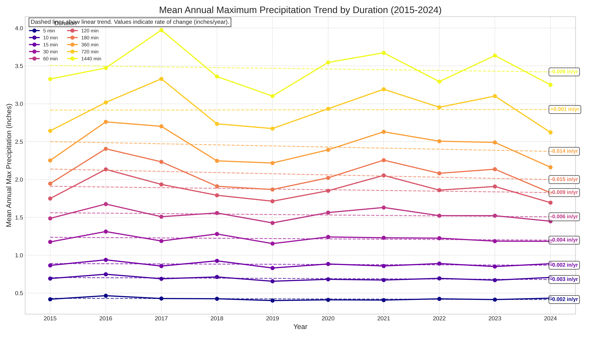
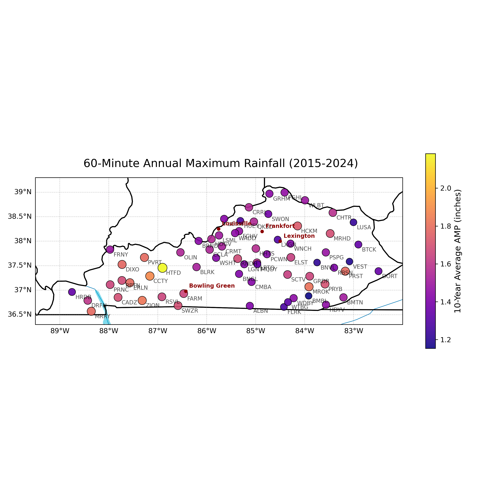
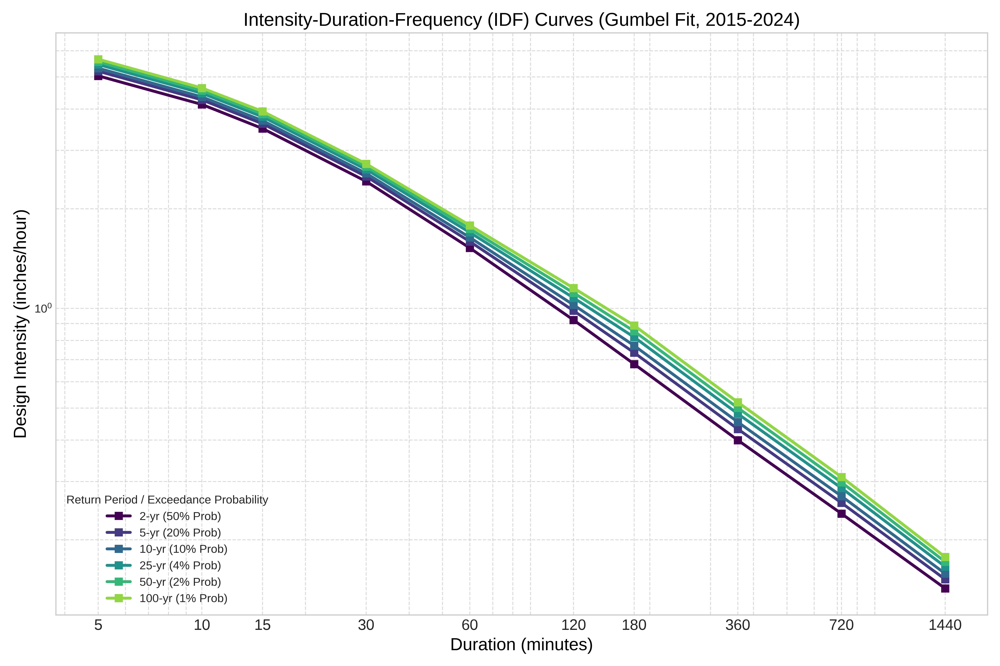

Authors
P. Tobbe, N. O. Pinkrah, S. Adhikari, Z. Suriano
Dept. of Earth, Environmental & Atmospheric Sciences, WKU
Venue
WKU Atmospheric Sciences Seminar
Oral Presentation · Fall 2025
Abstract
Extreme precipitation poses increasing risks to infrastructure, water resources, and public safety. In the US, NOAA Atlas 14 provides standard precipitation-frequency estimates for engineering design — but it does not incorporate data from the Kentucky Mesonet (KYMN), a dense automated station network established after Atlas 14 development. This study derives precipitation frequency statistics from KYMN observations (2015–2024), constructs statewide IDF curves using a Gumbel extreme-value framework for return periods 2–100 years and durations 5 min–24 hr, and compares directly to Atlas 14. Results show KYMN intensities exceed Atlas 14 for frequent events (2–10 yr RP, short durations ≤30 min, differences ~5–15%) but are systematically lower for rare events (≥50 yr RP). Findings suggest Atlas 14 may underestimate short-duration design rainfall — with implications for Kentucky's flood-prone urban drainage and infrastructure.
1. Motivation
Atlas 14 was developed using station records through the mid-2000s. The Kentucky Mesonet — launched afterward — now provides a dense, high-quality network of automated sub-hourly rainfall observations across the state. As extreme precipitation events intensify under climate change, the question of whether current design standards remain adequate is of direct practical importance for civil infrastructure, stormwater management, and flood-hazard planning.
2. Data & Methods
Annual Maximum Precipitation (AMP) series were extracted from KYMN stations for durations from 5 minutes to 24 hours (5-minute timestep) using 2015–2024 records. A Gumbel extreme value distribution was fitted to each duration's AMP series to produce return-period estimates at 2, 5, 10, 25, 50, and 100 years. Kriging interpolation was applied to produce spatially continuous statewide maps. Station-level IDF curves were then compared pixel-by-pixel against NOAA Atlas 14 values for Warren County and statewide.

Fig 1 — Mean Annual Maximum Precipitation Curve (Kentucky, 2015–2024): Statewide mean AMP increases monotonically with duration — from ~0.4 in at 5 min to ~3.5 in at 24 hr. The curve reflects the dominance of convective systems at short durations and synoptic-scale events at longer durations.

Fig 2 — Annual Maximum Time Series (all durations, 2015–2024): Trend lines across all duration categories reveal the temporal variability and any emerging trends in extreme precipitation over the KYMN record period.

Fig 3 — Spatial Distribution of 60-Minute AMP across Kentucky Mesonet Stations: Higher short-duration extreme rainfall is concentrated in central and western Kentucky, while eastern portions show relatively lower AMP values — consistent with the climatological gradient of convective precipitation across the Commonwealth.

Fig 4 — Spatial AMP Across Multiple Durations (Part 1): Station-level AMP across 5, 10, 15, and 30-minute durations showing coherent spatial variability. Kriging interpolation reveals localized hotspots and gradients persistent across short-duration thresholds.

Fig 5 — KYMN-Derived Intensity-Duration-Frequency (IDF) Curves: Statewide IDF curves for return periods 2–100 years. Design intensities exceed 5 in/hr for short-duration (≤10 min) events, decreasing to <0.2 in/hr at 24-hour durations. The 100-year 5-minute intensity (~5.5–5.7 in/hr) defines the upper bound for Kentucky infrastructure design.
3. Key Findings
Short-duration underestimation: KYMN intensities exceed Atlas 14 estimates for frequent events (2–10 year return periods) at durations ≤30 min by approximately 5–15%.
Rare-event overestimation: For return periods ≥50 years, KYMN-derived values are systematically lower than Atlas 14 — reflecting the shorter (10-year) Mesonet record not yet capturing the rarest extremes.
Exceptional curve agreement: Station-level comparisons against Atlas 14 show correlation coefficients r > 0.99 across all return periods, confirming excellent shape agreement despite magnitude differences.
Spatial pattern: Higher short-duration AMP concentrations in central and western Kentucky; lower values in the eastern Appalachian zone. Localized hotspots visible across the dense Mesonet network.
Design implication: Atlas 14 may underestimate design rainfall for short-duration events — particularly relevant for urban drainage infrastructure in rapidly developing parts of Kentucky.
4. Significance & Future Work
These findings directly support the case for incorporating KYMN observations into future precipitation-frequency updates (e.g., NOAA Atlas 15). As extreme events intensify under climate change, and as dense modern monitoring networks capture short-duration convective extremes that older gauge networks missed, updated IDF standards become increasingly important for flood-resilient infrastructure design.
Future extensions include: full statewide kriging at all return periods, comparison with radar-based QPE, and incorporation of trends under warming scenarios.